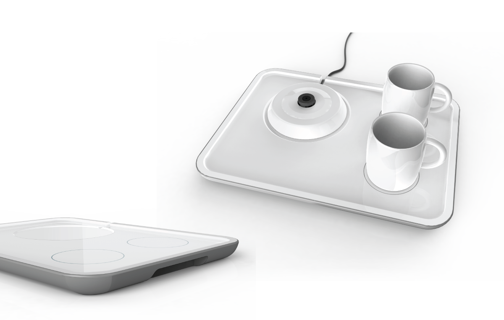
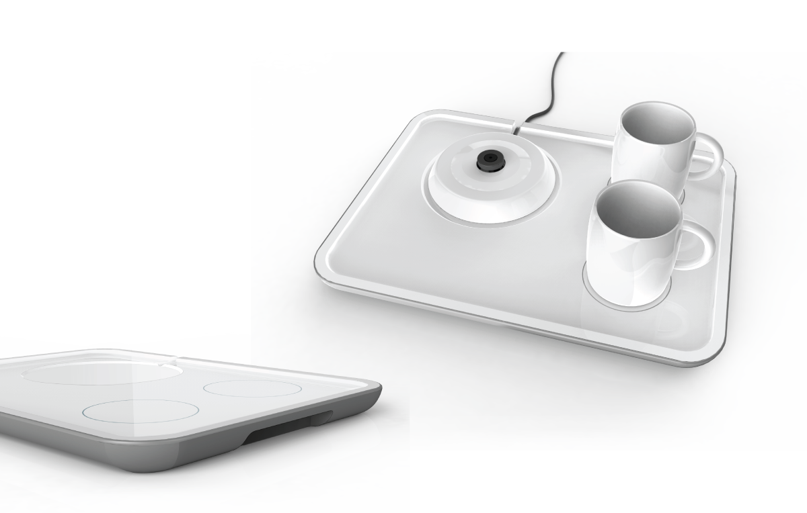

Brief
There are many electric kettles available on the market today, but few cater to the niche market for shared lodging such as hotels and hostels. From the functional aspect, many of the kettles used in these environment don't fully satisfy the technical requirements. Moreover, the style and the design do not complement the environment well. This project targets this specific niche with a kettle design that's economical to clients and satisfies the end-users' need.
 

Market Research
The project began with a market research to identify the gaps and the design opportunity. Findings on common characteristics of low-cost shared accommodations are:
- Target users are mostly inidividual traveller, family/group travellers or couples with budget considerations
- Focused on providing cost-effective and convenient service
- The interior decoration and appliances are mostly simple and functional.
Electrical kettles in these contexts present some issues related to easy of use, sanitation, and safety such as:
- Many have cups and tea bags placed together with the kettle but are disorganized.
- Kettles are aged and unappealing, some are caused by poor maintenance.
- The openings are small, causing some difficulty with cleaning the inner wall.
- Some users are more cautious with low-cost plastic kettles.
Design Opportunity
The Design opporunity and guidelines were informed by the research findings. I focused the design from three aspects:
- Ease of operation: A cost-effective design with simple functionality to satisfy basic needs, addional features such as heat preservationl and timing are not required
- Cleaning and maintenance: Should have a wide opening and spout, and use metalic material for the inner wall.
- Integration: A tray that helps organizing other necessities such as cups, spoons and tea bags for accommodating consumers' complementary needs with a better experience